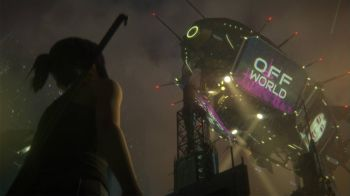
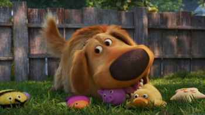
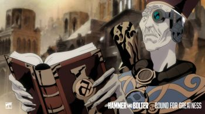
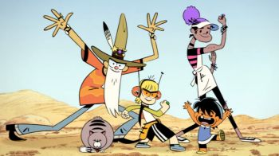
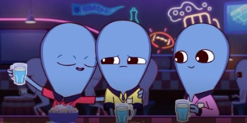
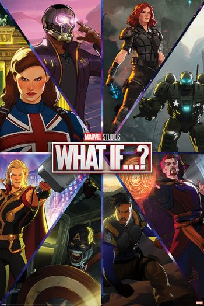
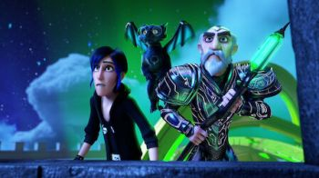

A film series is more than one film, each depicting parts of a larger story. Sometimes the work is conceived from the beginning as a multiple-film work, for example the Three Colours series, but in most cases the success of the original film inspires further films to be made. Individual sequels are relatively common, but are not always successful enough to spawn further installments.
The Marvel Cinematic Universe is the most highest grossing film series in unadjusted US Dollar figures surpassing the Harry Potter, Star Wars and James Bond series. However Peter Jackson's The Lord of the Rings has the highest average box office intake.
Мультипликация (от лат. multiplicatio — умножение, увеличение, возрастание, размножение) — технические приёмы создания иллюзии движущихся изображений (движения и/или изменения формы объектов — морфинга) с помощью последовательности неподвижных изображений (кадров), сменяющих друг друга с некоторой частотой. Анимация (от фр. animation: оживление, одушевление) — западное название мультипликации: вид киноискусства и его произведение (анимационный фильм и, в частности, мультфильм), а также семейство соответствующих технологий.
По мнению известного мультипликатора Фёдора Хитрука, использование в СССР терминов «мультипликация», «мультипликатор» связано с технологией, использовавшейся до внедрения классической рисованной анимации — созданием изображений при помощи наложения на лист элементов персонажей, что сродни аппликации. По созвучию с этим словом эта отрасль кинематографа была названа мультипликацией.
В искусстве мультипликацией называют разновидность искусства, как правило, использующую технологию мультипликации как основной элемент творчества.

«Бегущий по лезвию: Чёрный лотос» (англ. Blade Runner: Black Lotus) — аниме-сериал, являющийся частью научно-фантастической медиафраншизы «Бегущий по лезвию». Премьера состоялась 14 ноября 2021 года.
«Кастлвания» (англ. Castlevania) — американский мультсериал Уоррена Эллиса, основанный на видеоигре Konami Castlevania III: Dracula’s Curse 1989 года.
Премьера сериала состоялась на платформе Netflix 7 июля 2017 года. В тот же день сериал был продлён на второй сезон из 8 эпизодов, премьера которого состоялась 26 октября 2018 года. Вскоре после выпуска второго сезона сериал был продлён на третий сезон из 10 эпизодов, который появился на Netflix 5 марта 2020 года. 27 марта 2020 года было объявлено о продлении на четвёртый сезон.
«Шоу Чашека!» (англ. The Cuphead Show!) — американский анимационный телесериал, разработанный Дэйвом Вассоном для Netflix на основе видеоигры «Cuphead» от компании Studio MDHR. Чад и Джаред Мольденхауэры, создатели игры, являются исполнительными продюсерами наряду с Уоссоном и С. Дж. Кеттлер.
Премьера первого сезона состоялась на стриминговом сервисе Netflix 18 февраля 2022 года. Второй сезон вышел в эфир 19 августа 2022 года. Третий сезон вышел в эфир 18 ноября 2022 года.
«Тёмный кристалл: Эпоха сопротивления» (англ. The Dark Crystal: Age of Resistance) — американский кукольный веб-сериал жанра приключения и тёмное фэнтези, созданный по мотивам вселенной фильма 1982 года — «Тёмный кристалл». Сериал подробнее исследует вселенную данного фильма, выступая одновременно его приквелом. Основной сюжет завязан на том, что гельфлинги формируют восстание против скексисов в стремлении спасти родной мир от надвигающейся катастрофы. Выход сериала на сайте Netflix состоялся 30 августа 2019 года.
Сериал был создан с использованием кукол-аниматроников, это по состоянию на 2019 год самый дорогостоящий и масштабный проект с привлечением марионеток. Сеттинг и дизайн персонажей максимально приближен к фильму-первоисточнику 1982 года. Идея создать сериал исходила от того, что оригинальный фильм оставил после себя множество сюжетных дыр и «неразгаданных тайн». Сериал же призван существенно раскрыть подробности вселенной Тра и культуры гельфлингов. Определённое участие в команде создателей также принимали сценаристы, дизайнеры и кукловоды кинофраншизы о маппетах.
Сериал получил в целом признание критиков, которые назвали «Эпоху сопротивления» масштабным, красивым и эпическим шоу, «шедевром» кукольного искусства. История, по их мнению, в полной мере раскрывает сеттинг мира «Тёмного Кристалла». Одновременно марионетки были признаны и главным недостатком, так как они могут вызвать отторжение у потенциальных зрителей. Помимо прочего, критики указали и на неопределённость охвата целевой аудитории, вполне детский и наивный сюжет соседствует с жестокими сценами насилия и убийств.
Dragon Age: Absolution is an adult animated fantasy streaming television series created by Mairghread Scott. Produced by Red Dog Culture House under the supervision of BioWare, the series was released on Netflix on December 9, 2022. Set in BioWare's Dragon Age fictional universe, it focuses on the fallout from a heist gone wrong in the Tevinter Imperium.

Dug Days (also known as Up: Dug Days) is an American computer-animated streaming television series of shorts produced by Pixar Animation Studios for Disney+. The series is set immediately after the 2009 CGI film Up, following its main characters, dog Dug, voiced by Bob Peterson and his owner, 78-year-old Carl Fredricksen, voiced by Ed Asner in one of his last performances. It was created, written and directed by Peterson, and produced by Peterson and Kim Collins.
The series was announced in December 2020, during Disney's Investor Day, with Peterson pitched the series centering on Dug following his work on Forky Asks a Question. The animators created new animation rigging, textures, and hair for the characters in order to update their original designs due to advances in CG animation ever since the original film's release. Due to the COVID-19 pandemic in the United States, most of the final results from the animating process were done from the crew's homes, and the cast remotely recorded their dialogue.
Dug Days premiered with five episodes on September 1, 2021, on Disney+. It received generally positive reviews for its voice performance, message, role models, humor and emotional depth.
On December 19, 2022, it was announced that the final short, titled Carl's Date, will premiere exclusively in theaters with Pixar's Elemental (2023) on June 16, 2023.
Крайний космос (англ. Final Space, рус. Космо-рубеж, Космический рубеж) — американский телевизионный мультсериал, созданный Оланом Роджерсом и Дэвидом Саксом (англ.)рус.. Сюжет первого сезона повествует о Гэри, отбывающем тюремный срок в космосе, и Мункейке, таинственном пришельце, который привязался к Гэри и представляет угрозу всей вселенной.
Показ серий начался на сайте Reddit 15 февраля 2018 года. В этот же день первые две серии были показаны на сайте американского телеканала TBS. 17 февраля 2018 года серии были показаны по сестринскому телеканалу TNT. Официальная премьера состоялась 26 февраля 2018 года, премьера второго сезона, состоящего из 13 серий, состоялась 24 июня 2019 года на канале Adult Swim.
Сериал был продлён на третий сезон 1 октября 2019 года, спустя неделю после окончания второго сезона. Премьера третьего сезона состоялась 20 марта 2021 года.
Шоу закрыли после третьего сезона. Об этом сообщил автор сериала Олан Роджерс в видео «Goodbye Final Space», которое вышло 10 сентября 2021 года.
После безуспешных переговоров с Warner Bros., 15 июня 2022 года Олан Роджерс объявил о сборе средств на короткометражный анимационный эпизод «Godspeed», который будет вдохновлён оригинальным шоу.

Hammer and Bolter is an animated series based on the Warhammer 40,000 games. 14 episodes were broadcast from August 2021 to May 2023.
«Отель „Хазбин“» (англ. Hazbin Hotel) — американский анимационный сериал, созданный сальвадоро-американской художницей и аниматором Вивьен Медрано. Официальный пилотный эпизод был выпущен на YouTube 28 октября 2019 года на канале «Vivziepop». 6 ноября 2019 года было объявлено о сборе средств на Patreon, а также поиске спонсоров для продолжения работы над анимационным проектом. К августу 2020 года проект сформировал вокруг себя крупную международную фанатскую базу, а пилотный выпуск набрал более 73 миллионов просмотров, что привлекло внимание множества анимационных новостных издательств, а также кинодистрибьюторских компаний. В России по рейтингу результатов поиска в Яндексе за 2019 год «Отель „Хазбин“» вошёл в первую десятку среди мультфильмов.
Так, 7 августа 2020 года американская независимая компания A24 заявила о том, что та берёт под свою опеку проект Hazbin Hotel и его спин-оффы в качестве полноценного телесериала. А также заявили, что они уже выкупили право на трансляцию на телевидении. Премьера первого сезона состоялась 19 января 2024 года.
Хит-Манки (Marvel's Hit-Monkey) — американский мультсериал, созданный для стримингового сервиса Hulu, основанный на одноимённом персонаже комиксов Marvel.
Первый сезон мультсериала был представлен 17 ноября 2021 года.
«Я есть Грут» (англ. I Am Groot) — американский короткометражный мультсериал, созданный Кирстен Лепор для стримингового сервиса Disney+, основанный на одноимённом персонаже Marvel Comics. В нём представлены персонажи из медиафраншизы «Кинематографическая вселенная Marvel» (КВМ). Производством занималась компания Marvel Studios Animation. Сериал состоит из двух сезонов по пять короткометражек, рассказывающих о приключениях Малыша Грута между событиями фильма «Стражи Галактики» (2014) и четвёртой сцены после титров фильма «Стражи Галактики. Часть 2» (2017). Лепор выступает главным сценаристом и режиссёром.
Вин Дизель повторяет свою роль Малыша Грута из фильмов КВМ, также в озвучке принял участие Брэдли Купер. «Я есть Грут» был анонсирован в декабре 2020 года. Производство фотореалистичной анимации началось в августе 2021 года, а Лепор была назначена режиссёром в ноябре 2021 года.
Премьера первого сезона «Я есть Грут» состоялась 10 августа 2022 года. Он стал частью Четвёртой фазы КВМ. Второй сезон вышел 6 сентября 2023 года, он стал частью Пятой фазы КВМ.
«Корпорация „Заговор“» (англ. Inside Job) — американский анимационный телесериал для взрослой аудитории, созданный Сион Такэути для потокового сервиса Netflix. Алекс Хирш, создатель мультсериала «Гравити Фолз», выступает в качестве исполнительного продюсера вместе с Сион Такэути.
Премьера первого сезона сериала состоялась 22 октября 2021 года на Netflix.

Kid Cosmic is an American animated superhero television series created by Craig McCracken for Netflix. The show is based on his 2009 comic The Kid From Planet Earth. Produced in-house by Netflix Animation, the show is McCracken's first to have a serialized format, as well as his second foray into the superhero genre, having previously created The Powerpuff Girls. Illustrated in a "retro 2D" style inspired by comics such as Dennis the Menace and The Adventures of Tintin, the series follows Kid, a young boy who gets a chance to become a superhero and fight evil aliens alongside other characters with different abilities.
The first season of the series was released on February 2, 2021. The second season, subtitled The Intergalactic Truckstop!, was released on September 7, 2021. The third and final season, subtitled The Global Heroes!, was released on February 3, 2022.
«Любовь. Смерть. Роботы» (англ. Love, Death & Robots, стилизованно под LOVE DEATH + ROBOTS) — американский анимационный сериал-антология, выпущенный в потоковом сервисе Netflix и состоящий из короткометражных анимационных фильмов разной продолжительности, созданных с расчётом на взрослую аудиторию. Первый сезон, состоящий из 18 эпизодов, вышел 15 марта 2019 года.
Исполнительными продюсерами сериала выступили Дэвид Финчер, Тим Миллер, Джошуа Донен и Дженнифер Миллер. Каждый эпизод был создан разными командами и студиями из разных стран мира, а большинство из них использует собственные типы анимации, за исключением эпизода «Ледниковый период», где снялись живые актёры — Мэри Элизабет Уинстэд и Тофер Грейс. Сериал находился в разработке больше 10 лет, а источником вдохновения для Финчера и Миллера послужили комиксы и рассказы из журнала Heavy Metal.
В июне 2019 года Netflix объявил о продлении сериала на второй сезон.
«Царство падальщиков» (англ. Scavengers Reign) — американский анимационный научно-фантастический телесериал для взрослых. Создан Джозефом Беннеттом и Чарльзом Гюттнером для сервиса Max на основе их короткометражного фильма «Падальщики» 2016 года. Сериал был заказан в июне 2022 года, а премьера первого сезона из 12 серий состоялась 19 октября 2023 года.

Strange Planet is an animated science fiction comedy television series based on the webcomic of the same name by Nathan W. Pyle. Pyle co-created the series with Dan Harmon. The series premiered on August 9, 2023 on Apple TV+.
Виксен (англ. Vixen) — американский анимационный веб-сериал, созданный Марком Гуггенхаймом. Премьера состоялась 25 августа 2015 года, когда эпизоды «Виксен» были показаны на канале CW Seed, дочернем канале сети The CW, предназначенном для детской аудитории. Все события анимационного веб-сериала, по заявлениям создателей, происходят в Телевизионной Вселенной DC канала The CW. В центре сюжета находится Мари МакКейб/Виксен, супергероиня комиксов издательства DC Comics, способная имитировать способности различных животных.

«Что, если…?» (англ. What If…?) — американский анимационный сериал, созданный Э. С. Брэдли для сервиса потокового вещания Disney+ и основанный на одноимённой серии комиксов Marvel. Четвёртый по счёту сериал четвёртой фазы медиафраншизы «Кинематографическая вселенная Marvel» (КВМ). Каждый из эпизодов раскрывает, что могло бы случиться, если бы ключевые события фильмов киновселенной произошли иначе. Анимационный сериал разработан Marvel Studios, что делает «Что, если…?» первой анимационной работой студии. Режиссёром выступает Брайан Эндрюс, а главным сценаристом — Э.С. Брэдли.
Джеффри Райт озвучивает Наблюдателя — рассказчика событий. Многие актёры фильмов киновселенной озвучивают своих персонажей. К сентябрю 2018 года Marvel Studios разрабатывала несколько сериалов для Disney+, мультсериал по комиксу «Что, если…?» был анонсирован в апреле 2019 года. Глава визуального отдела Marvel Studios Райан Мейнердинг помог определить сел-шейдинговый стиль анимации для мультсериала, который был вдохновлён фильмами КВМ и классическими американскими иллюстраторами. Компании Squeeze и Flying Bark Productions занимались анимацией проекта, главным аниматором первого сезона стал Стефан Фрэнк.
Первый сезон «Что, если…?», состоящий из 9 эпизодов, выходил с 11 августа по 6 октября 2021 года. Он стал частью Четвёртой фазы КВМ. Премьера второго сезона состоится 22 декабря 2023 года. Он станет частью Пятой фазы КВМ. В июле 2022 года стало известно, что мультсериал продлён на третий сезон. В целом, мультсериал был положительно воспринят, похвал удостоились озвучка и изобретательные сюжетные линии, хотя основная критика была связана со стилем анимации и сценарием. В разработке также находится анимационный сериал «Зомби Marvel», основанный на пятом эпизоде «Что, если…?».

«Волшебники: Истории Аркадии» (англ. Wizards: Tales of Arcadia) — американо-мексиканский компьютерный мультсериал, созданный Гильермо дель Торо для Netflix и спродюсированный DreamWorks Animation. Третий и последний сериал из трилогии Истории Аркадии. Первый сериал трилогии — Охотники на троллей: Истории Аркадии, а второй — Трое с небес: Истории Аркадии. За трилогией последует предстоящий полнометражный мультфильм Охотники на троллей: Восстание титанов. Сериал был полностью выпущен 7 августа 2020 года.